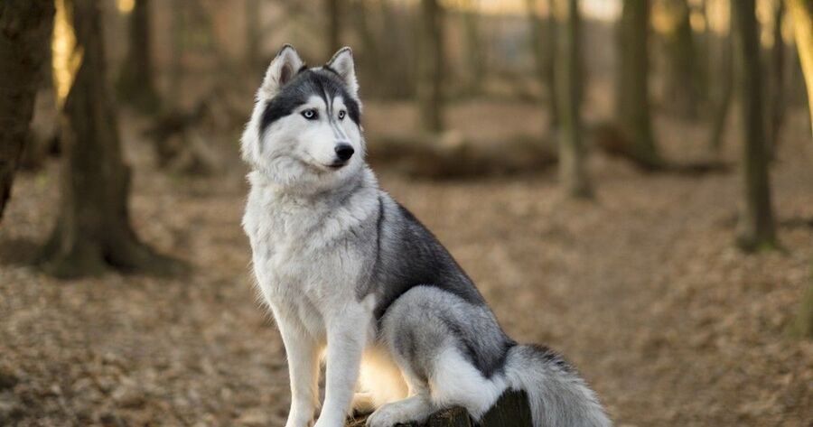

Se está pensando em adotar um Husky Siberiano adulto ou filhote entrou no sítio certo, pois no PeritoAnimal vamos lhe explicar tudo sobre o Husky Siberiano incluindo curiosidades sobre o seu caráter, comportamento, relação social com outros animais e cuidados específicos. Em resumo, tudo o que precisa saber sobre este maravilhoso cão.
Antes de começar, deve saber que o Husky Siberiano nasceu graças à tribo "Chukchi" originária de Chukotka, Rússia. A tribo, que ainda habita em ambientes frios e despovoados, utilizava o Husky Siberiano como cachorro de companhia, pastor de veados, para puxar os trenós e inclusive para manter as crianças quentes nas noites gélidas. Posteriormente utilizou-se com propósitos idênticos no Alaska, EEUU.
Atualmente o Husky Siberiano é um excelente cão de companhia bastante popular pela sua cara bonita, corpo resistente e aparência idêntica à de um lobo. Continue lendo e descubra tudo sobre o Husky!Ignorem o olhar sério e com aspecto de bravo do Husky Siberiano. Por trás da fisionomia deles, os cãezinhos são amigáveis, brincalhões e totalmente família. Com o porte robusto, os pets possuem o rosto arredondado e as orelhas eretas, curtas e pontudas. Os olhos podem ser azuis, castanhos ou um de cada cor (heterocromia).
A paleta de cores dos pelos é a mais variada: vai do preto ao branco puro. Por ser uma raça específica para a vida na neve, as patas possuem pelos entre os dedos para proteger a sola. A cauda se mantém em pé quando o cão está atento e abaixa quando ele está em descanso ou em trabalho.
.png)
.svg)